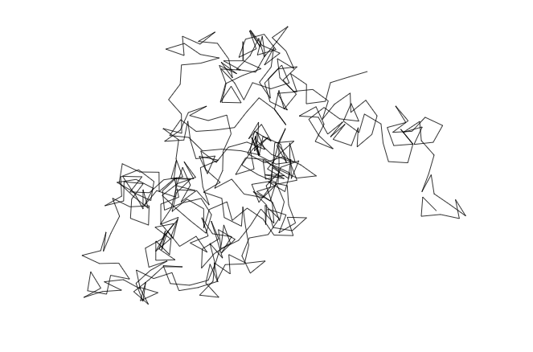

Imagine um bêbado andando numa praça. Ele está sob forte efeito etílico... por isso, a partir de sua posição, pode andar para qualquer direção. Os passos seguintes seguem o mesmo padrão: um passo numa direção aleatória, com qualquer ângulo com a mesma probabilidade. Por conta disso, esse tipo de caminho é chamado de random walk.
Fiz um simuladorzinho de Random Walk, disponível aqui:
Uma foto da visualização aqui:
Este tipo de modelo pode ser utilizado no mercado financeiro (afinal, como saber se uma ação vai subir ou não?), modelos biológico (como o movimento de formigas), e modelos como de partículas num gás - o movimento Browniano.
O domínio mostrado nas figuras é o 2D. De forma similar, é possível pensar em random walk em uma dimensão (imagine o bêbado num ponto onde ele pode só ir para frente ou para trás), duas dimensões, três, etc...
Uma pergunta especialmente interessante é "o problema do andar do bêbado". Será que, se ele andar o suficiente, um dia vai voltar exatamente à posição inicial? Já que ele sempre tem a mesma probabilidade de ir para a direita ou esquerda, para cima ou para baixo, parece razoável supor que sim: se o número de passos tender a infinito, cedo ou tarde o nosso amigo cachaceiro volta ao ponto de partida.
Na verdade, quando o número de passos tende a infinito, a probabilidade do bêbado alcançar qualquer posição (não apenas a posição inicial) tende a 1 - isso no plano 2D.
Gif da simulação de random walk.

No caso 3D, o número de alternativas cresce tanto que o nosso herói pode sim se perder, e nunca mais retornar ao início, mesmo com infinitos passos. Essa probabilidade é de 34% (vide links abaixo).
Há algumas obras de arte utilizando random walks, só que eu nunca achei muito bonitas. Então, pedi para o Dall-E criar um bêbado andando aleatoriamente, ao estilo de Van Gogh, e temos a figura a seguir.

Há dois livros bem interessantes sobre "random walk":
Investir é difícil. O autor defende que o mercado acionário se comporta como um random walk. Por isso, é extremamente difícil escolher uma ação que vai bombar, e também saber qual será o mico (como no caso das Americanas, recentemente).
Você não consegue bater o mercado. Uma boa estratégia é investir em fundos que acompanham o índice de ações, porque dilui o risco e captura o crescimento médio do mercado como um todo.
Link da Amazon: https://amzn.to/3D4HDmK

Olhando a vida como um random walk, ocorrem inúmeros aspectos randômicos que poderiam ter mudado nossa vida.
Não temos ação sobre a sorte, a fortuna. Os vencedores que louvamos não são apenas competentes, também tiveram sorte na vida.
Olhe para o processo. Pelo que as pessoas são, pelos princípios, pelo que elas fazem, e não pelos resultados.
Voltando ao tema das Americanas, muita gente admirava os 3 bilionários do 3G pelos resultados. Mas, olhando pelo processo em suas empresas, tinha muita coisa questionável, no mínimo: espremer fornecedores até quase acabar com eles, longas jornadas e cobrança nos funcionários, muita agressividade em todos os movimentos (como cortes de custos, desinvestimentos), e, agora, até maquiagem contábil (talvez não tenha sido eles, mas essa cultura agressiva não ajuda).
Link da Amazon: https://amzn.to/3wo08Pz

Por fim, já que estamos falando de bêbados aleatórios, segue a trilha sonora deste post.
Trilha Sonora: O bêbado e o equilibrista - Elis Regina
https://www.youtube.com/watch?v=6kVBqefGcf4
Veja também:
https://mathworld.wolfram.com/RandomWalk2-Dimensional.html
https://www.wolframalpha.com/input/?i=random+walk%E2%80%943-dimensional
https://ideiasesquecidas.com/2020/01/18/iludidos-pelo-acaso/
Veja também: Forgotten Lore - Ideias Técnicas com uma pitada de filosofia.